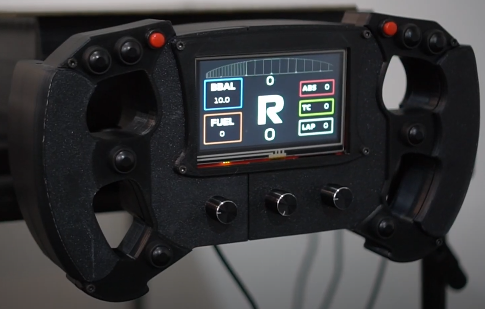

Hi, I’m Samuel Swedberg
I am a Computer Engineering graduate from North Dakota State University. This website's primary use is to showcase my personal and academic projects.
View All ProjectsFeatured Project
Sim Racing System
A custom-built racing system designed for use in racing simulation setups. Belt motor force feedback, responsive controls, and built from the ground up with 3D printing and alumnium extrusion.
Learn More →
Why I Build
I enjoy creating hardware and firmware that solve real problems. Whether it’s developing a custom sim racing system or writing efficient embedded code, I focus on building systems that are reliable, responsive, and purposeful.
Tools I Use
STM32
ESP32
C / C++
FreeRTOS
Fusion 360
KiCad
3D Printing
✨ Currently working on my next video game in Unity.